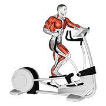
ELÍPTICA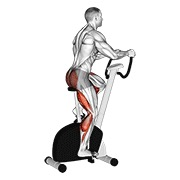
BICI
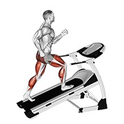
CAMINADORA01 · CARDIO
Cardio moderado
16 min · elige una máquina y mantén un ritmo que permita hablar sin jadear; sin intervalos ni fatiga de piernas.
Sube la temperatura y prepara hombros antes de las series efectivas.

ELÍPTICA
BICI
CAMINADORA16 min · elige una máquina y mantén un ritmo que permita hablar sin jadear; sin intervalos ni fatiga de piernas.
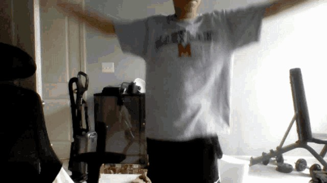
CÍRCULOS DE BRAZOS · VIDEO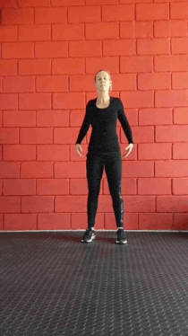
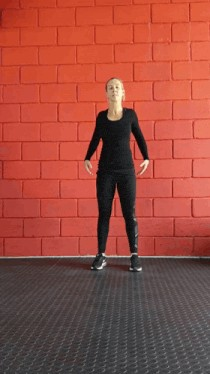
CÍRCULOS DE HOMBROS · VIDEO2 min · sin bandas ni equipo: 10 círculos de brazos hacia cada dirección + 10 círculos de hombros. De pie, cuello relajado, movimiento lento y rango cómodo; detente si aparece dolor.
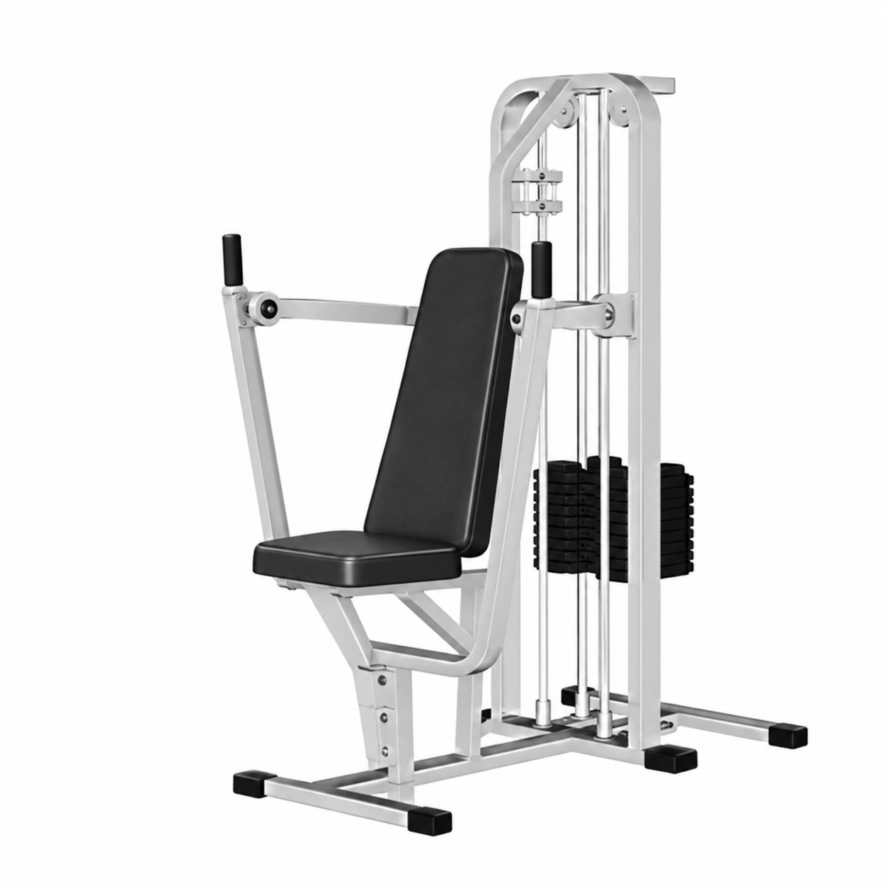
VISTA AISLADA · ILUSTRACIÓN DE APOYO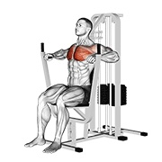
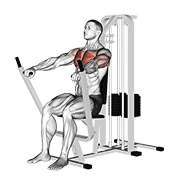
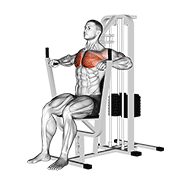
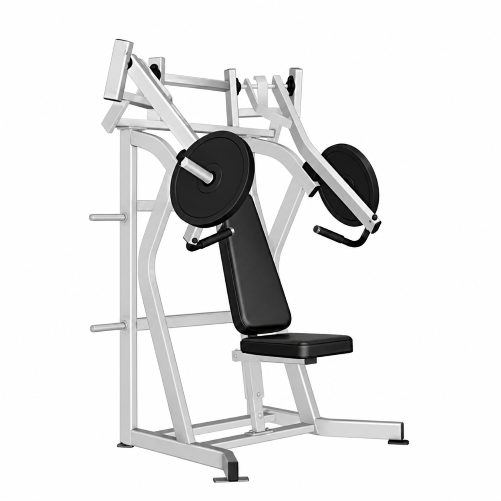
VISTA AISLADA · ILUSTRACIÓN DE APOYO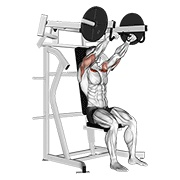
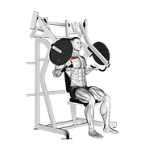
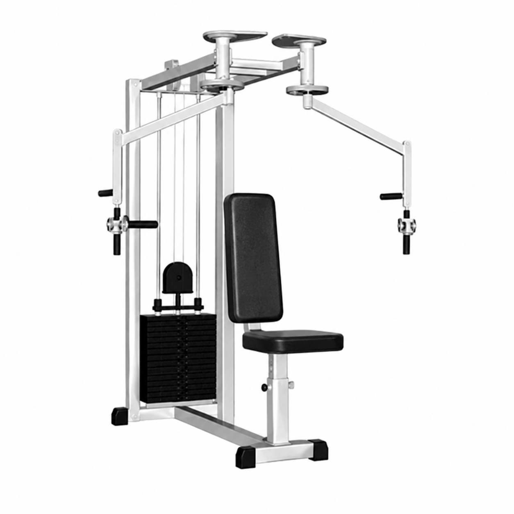
VISTA AISLADA · ILUSTRACIÓN DE APOYO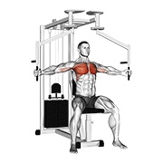
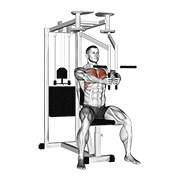
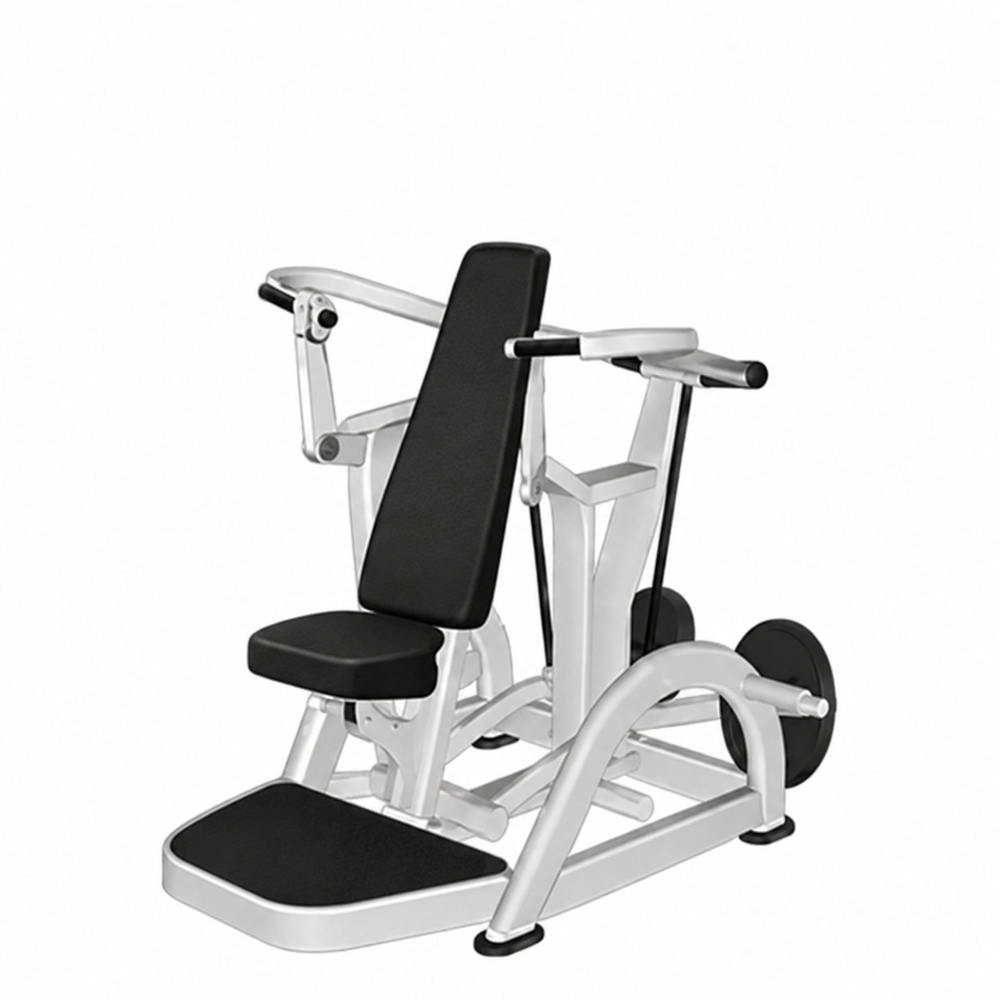
VISTA AISLADA · ILUSTRACIÓN DE APOYO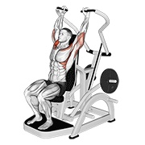
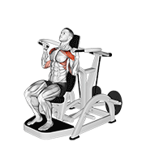
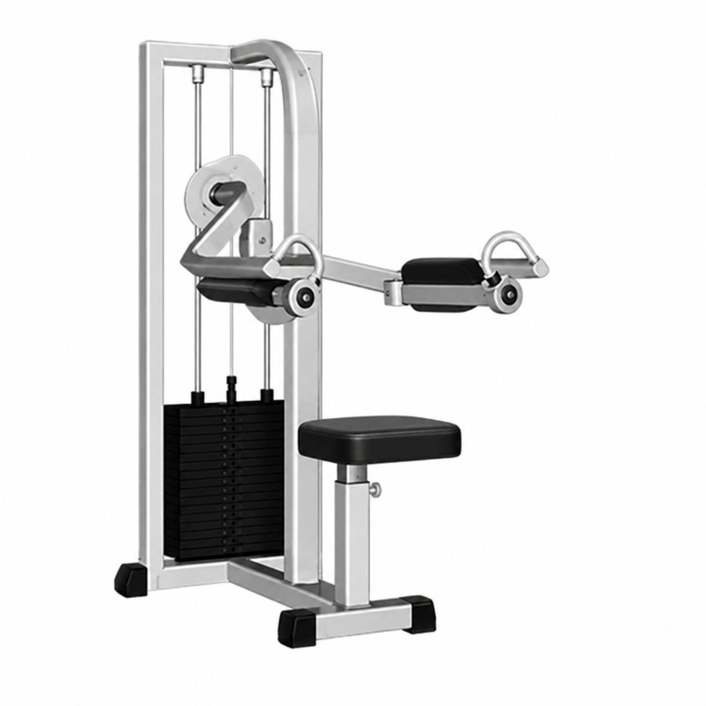
VISTA AISLADA · ILUSTRACIÓN DE APOYO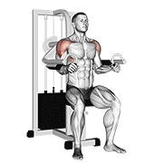
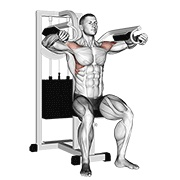
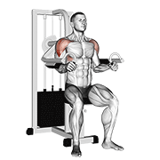
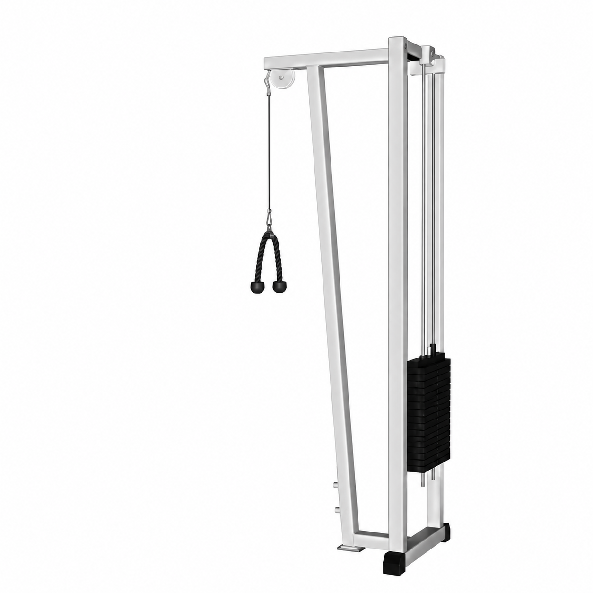
VISTA AISLADA · ILUSTRACIÓN DE APOYO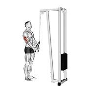
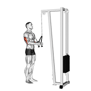
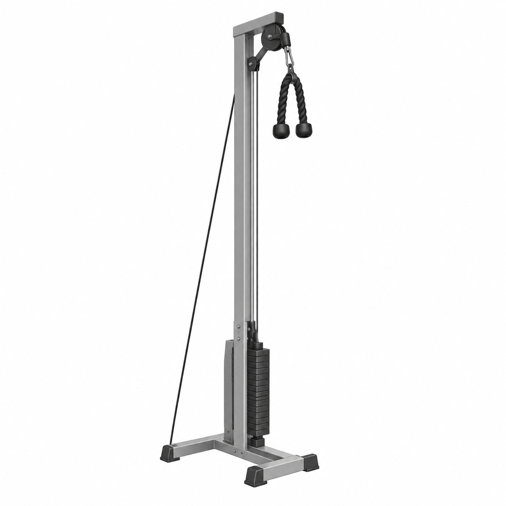
VISTA AISLADA · ILUSTRACIÓN DE APOYO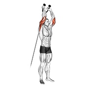
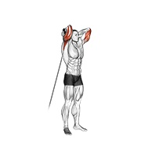
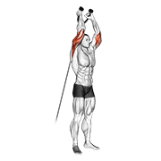
Una serie a la vez. Hoy cumpliste.